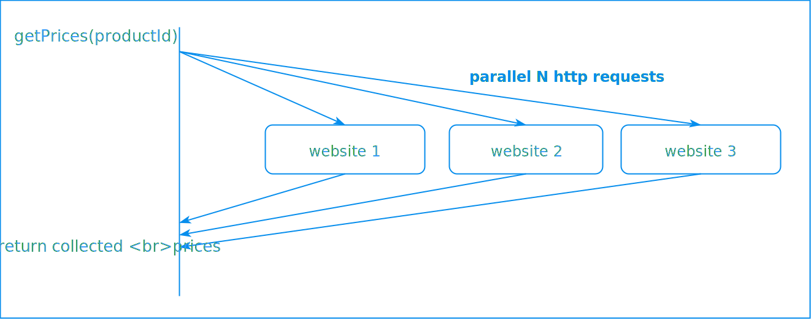

Overview
Suppose that you have to implement a function that returns the price of a product from different e-commerce websites. Such problem could be solved by making successive http requests like this :

But we quickly discover that we have performance issue here: in fact, for each request, the thread blocks until he gets the response back, after that he send another request. So what we really need is to make from the beginning, N http requests and collect the responses at the end
So we can start with this implementation, where we have
- implemented a Runnable which is responsible for getting the product price from one e-commerce website
- shared a SynchronousList among these Runnable, so they can add the price that obtained from the remote website, to this synchronized list
private ExecutorService threadPool = Executors.newFixedThreadPool(THREAD_POOL_SIZE);
public List<Double> getProductPrices(String productId) {
List<Double> prices = Collections.synchronizedList(new ArrayList<>());
threadPool.submit(new GetProductPrice(productId, website1, prices));
threadPool.submit(new GetProductPrice(productId, website2, prices));
threadPool.submit(new GetProductPrice(productId, website3, prices));
return prices;
}
public static class GetProductPrice implements Runnable {
private String website;
private String productId;
private List<Double> prices;
public GetProductPrice(String website, String productId, List<Double> prices) {
this.website = website;
this.productId = productId;
this.prices = prices;
}
@Override
public void run() {
prices.add(Math.random()); // simulate http request
}
}
But when we call the getProductPrices method, we obtain an empty list. In fact, when we reread our code, we will notice that the main thread that calls this method, has submitted three Runnable in the threadPool but doesn't wait for them to finish.
To fix that, we are going to add a CountDownLatch to our implementation. We will initialize it with the number of Runnables that we have submitted to the threadPool and at the end of the run method of each Runnable, we make a count down of this latch. Before exiting the main method, we will wait for the completion of its Runnable using the latch.await() method
private ExecutorService threadPool = Executors.newFixedThreadPool(THREAD_POOL_SIZE);
public List<Double> getProductPrices(String productId) throws InterruptedException {
List<Double> prices = Collections.synchronizedList(new ArrayList<>());
CountDownLatch latch = new CountDownLatch(3);
threadPool.submit(new GetProductPrice(productId, website1, prices, latch));
threadPool.submit(new GetProductPrice(productId, website2, prices, latch));
threadPool.submit(new GetProductPrice(productId, website3, prices, latch));
latch.await();
return prices;
}
public class GetProductPrice implements Runnable {
private String website;
private String productId;
private List<Double> prices;
private CountDownLatch latch;
public GetProductPrice(String website, String productId, List<Double> prices, CountDownLatch latch) {
this.website = website;
this.productId = productId;
this.prices = prices;
this.latch = latch;
}
@Override
public void run() {
prices.add(Math.random());
latch.countDown();
}
}
Supposing now that we want to introduce timeout to our method

Such feature is very easy to implement with what we have implemented so far. In fact, we will use the following method of CountDownLatch class
public boolean await(long timeout, TimeUnit unit)
Can we do better ?
With Java 9, we can use CompletableFuture and make rid of the CountDownLatch code. Here is the final code how it looks like :
public List<Double> getProductPrices(String productId) throws Exception {
List<Double> prices = Collections.synchronizedList(new ArrayList<>());
CompletableFuture<Void> task1 = CompletableFuture.runAsync(new GetProductPrice(productId, website1, prices, 1000));
CompletableFuture<Void> task2 = CompletableFuture.runAsync(new GetProductPrice(productId, website2, prices, 1800));
CompletableFuture<Void> task3 = CompletableFuture.runAsync(new GetProductPrice(productId, website3, prices, 2400));
CompletableFuture<Void> allTasks = CompletableFuture.allOf(task1, task2, task3);
allTasks.completeOnTimeout(null, 2, TimeUnit.SECONDS).get();
return prices;
}
public class GetProductPrice implements Runnable {
private String website;
private String productId;
private List<Double> prices;
private long timeout;
public GetProductPrice(String website, String productId, List<Double> prices, long timeout) {
this.website = website;
this.productId = productId;
this.prices = prices;
this.timeout = timeout;
}
@Override
public void run() {
try {
Thread.sleep(timeout);
prices.add(Math.random());
} catch (InterruptedException e) {
e.printStackTrace();
}
}
}